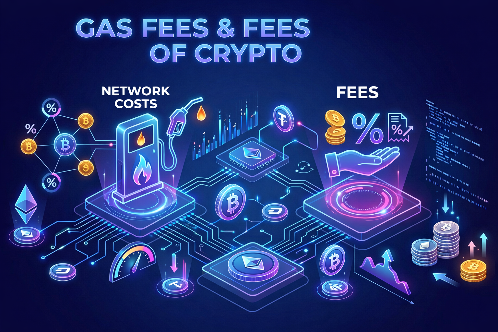

ΟΔΗΓΟΣ
Gas Fees & Fees: Τι πληρώνεις στα crypto;
Στα crypto υπάρχουν διαφορετικά είδη “fees” — άλλα είναι χρεώσεις δικτύου (gas) και άλλα είναι χρεώσεις υπηρεσίας (trading fees)…

Τι είναι το Gas Fee;
Το gas fee είναι η χρέωση που πληρώνεις στο δίκτυο (π.χ. Ethereum) για να επεξεργαστεί και να καταγράψει τη συναλλαγή σου στο blockchain. Δεν πάει σε καμία εταιρεία — πάει στους validators/miners που επεξεργάζονται τα blocks.
Τι είναι τα «άλλα fees»;
Πέρα από το gas, μπορεί να πληρώσεις και χρεώσεις υπηρεσίας: προμήθεια ανταλλακτηρίου (exchange fee), προμήθεια πρωτοκόλλου (π.χ. DEX swap fee) ή προμήθεια ανάληψης (withdrawal fee). Αυτά πάνε στην πλατφόρμα ή στο πρωτόκολλο, όχι στο δίκτυο.
Γιατί αλλάζουν τα fees;
Τα fees δεν είναι σταθερά — ανεβοκατεβαίνουν ανάλογα με:
- Τη ζήτηση του δικτύου τη συγκεκριμένη στιγμή
- Την πολυπλοκότητα της συναλλαγής (απλή μεταφορά vs smart contract)
- Το blockchain που χρησιμοποιείς (π.χ. Ethereum vs Solana vs Polygon)
- Τις συνθήκες της αγοράς (έντονη δραστηριότητα = μεγαλύτερη συμφόρηση)
Σε ώρες αιχμής, τα fees μπορεί να πολλαπλασιαστούν μέσα σε λίγα λεπτά.
Τι πληρώνεις σε μια συναλλαγή (ροή)
- Στέλνεις μια συναλλαγή (π.χ. swap ή μεταφορά)
- Το wallet σου εκτιμά το απαιτούμενο gas
- Επιλέγεις ταχύτητα (αργή / κανονική / γρήγορη)
- Η συναλλαγή μπαίνει σε αναμονή (mempool)
- Κάποιος validator/miner την επεξεργάζεται και τη βάζει σε ένα block
- Πληρώνεις το gas fee + τυχόν επιπλέον χρεώσεις της πλατφόρμας
Βασικοί όροι
Gas limit: το μέγιστο gas που επιτρέπεις να ξοδευτεί. Gas price: πόσο πληρώνεις ανά μονάδα gas. Base fee & priority fee (Ethereum): το βασικό κόστος του δικτύου plus το «φιλοδώρημα» για ταχύτερη επεξεργασία. Slippage: η διαφορά τιμής που μπορεί να προκύψει σε ένα swap λόγω καθυστέρησης.
Πώς μειώνω τα fees;
Μπορείς να μειώσεις το κόστος επιλέγοντας τη σωστή στιγμή και το σωστό δίκτυο: συναλλαγές εκτός ωρών αιχμής, χρήση Layer 2 λύσεων (π.χ. Arbitrum, Optimism, Polygon) αντί για το Ethereum mainnet, και batching πολλών ενεργειών σε μία συναλλαγή όπου είναι δυνατό.
Tip: Έλεγξε πάντα την εκτίμηση gas πριν επιβεβαιώσεις — τα περισσότερα wallets σου δείχνουν το κόστος σε δολάρια πριν πατήσεις confirm.
Συχνά λάθη
- Να στέλνεις συναλλαγές σε ώρες υψηλής συμφόρησης χωρίς λόγο
- Να μην ελέγχεις σε ποιο δίκτυο βρίσκεσαι πριν στείλεις
- Να ορίζεις πολύ χαμηλό gas και η συναλλαγή να «κολλάει»
- Να αγνοείς το slippage σε μεγάλα swaps
- Να κάνεις πολλές μικρές συναλλαγές αντί για μία batched
- Να μπερδεύεις το gas fee με την προμήθεια του ανταλλακτηρίου
- Να μη λαμβάνεις υπόψη τα fees όταν υπολογίζεις το πραγματικό κόστος μιας στρατηγικής
Τι είναι «OK» να πληρώνεις
- Μικρό gas fee για μια απλή μεταφορά σε ήσυχες ώρες
- Λογική προμήθεια ανταλλακτηρίου για trading
- Χαμηλά fees σε Layer 2 δίκτυα για συχνές ενέργειες
- Κόστος gas για on-chain ασφάλεια και διαφάνεια
- Μικρή προμήθεια ανάληψης για μεταφορά σε wallet
Τι να προσέχεις
- Υπερβολικά υψηλά fees σε ώρες συμφόρησης
- Κρυφές χρεώσεις σε λιγότερο γνωστά ανταλλακτήρια
- Πολύ χαμηλό gas που καθυστερεί ή αποτυγχάνει τη συναλλαγή
- Μεγάλο slippage σε pools χαμηλής ρευστότητας
Παραδείγματα κόστους
- Μεταφορά ETH σε ήσυχη ώρα: λίγα cents έως 1-2$
- Swap σε DEX στο Ethereum σε ώρα συμφόρησης: 10-50$ ή περισσότερο
- Συναλλαγή σε Layer 2 (π.χ. Arbitrum, Polygon): συνήθως κάτω από 0,10$
- Mint NFT σε δημοφιλές project: μπορεί να φτάσει δεκάδες ή εκατοντάδες δολάρια σε gas
Συμπέρασμα
Τα fees είναι μέρος του «κόστους λειτουργίας» στο crypto. Δεν μπορείς να τα αποφύγεις εντελώς, αλλά μπορείς να τα διαχειριστείς: επίλεξε το σωστό δίκτυο, τη σωστή ώρα, και μάθε να διαβάζεις την εκτίμηση πριν επιβεβαιώσεις.